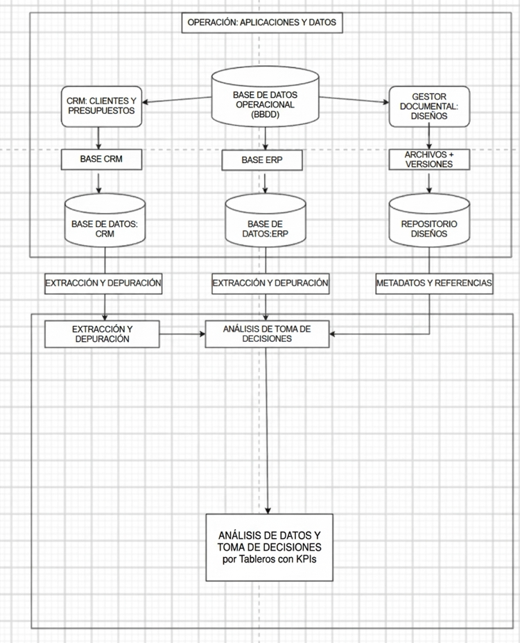
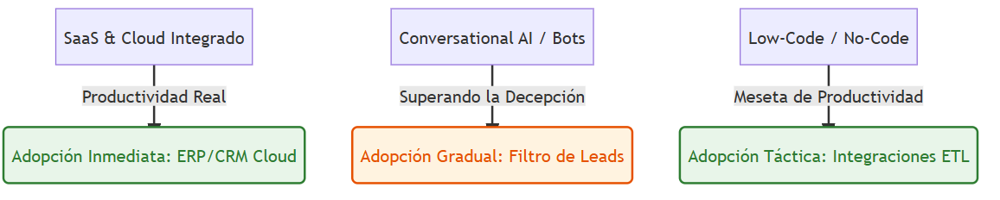
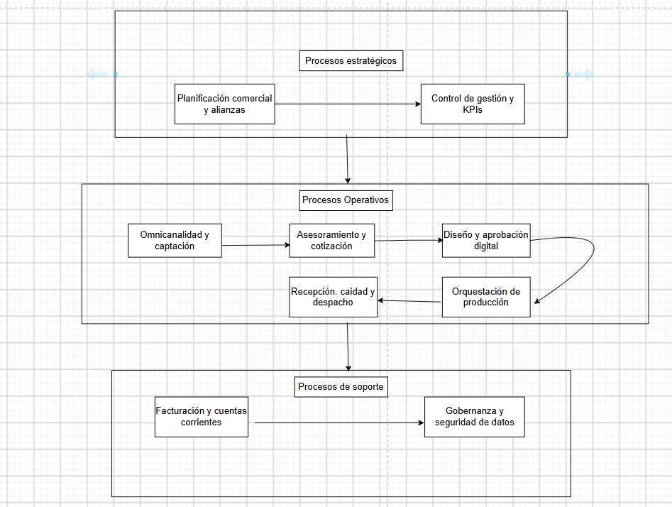

1. Visión de la Arquitectura Empresarial Destino (Integrada)
La arquitectura destino de Avios Lynch se consolida bajo un enfoque de "Operación y Análisis Separados". Esto permite que la PyME escale operativamente sin perder la capacidad de analizar su negocio para tomar decisiones estratégicas.
A. Arquitectura de Negocios (Procesos)
- Flujo de Trabajo Unificado: El proceso operativo se apoya en el concepto de "Dato Único de Pedido". Cada área de la organización (Ventas, Administración, Diseño y Depósito) aporta información incremental sobre el mismo registro en lugar de transcribir datos entre planillas manuales y/o en papel que tiene cada sector.
B. Arquitectura de Datos (Información)
Aquí es donde el nuevo documento genera el mayor salto de calidad, estructurando la información en tres capas claras:
- Capa Transaccional (OLTP): Bases de datos optimizadas para el registro rápido del día a día (ventas, presupuestos, estados de pedidos, movimientos de stock), en un inicio mediante un excel de sector, luego una bases de datos general y unificada en donde esté reunida la información.
- Repositorio de Documentos (Archivos + Versiones): Almacenamiento específico para las ventas, la recepción del pedido de los talleres (proveedores) y envío de pedidos a los clientes, las transacciones administrativas de pagos y cobros, apartado de contabilidad, los bocetos y aprobaciones de diseño, vinculando la referencia del archivo directamente al pedido en una carpeta en la nube. Como destino inicial, la propuesta es que cada área tenga un acceso restringido a cada carpeta propia con una hoja de cálculo individual. Al momento de crecimiento de la organización, como un segundo destino, cuando pase a no no ser viable, la incorporación de CRM/ERP en la nube.
- Capa Analítica (consolidación de información para toma de decisiones): la base de datos será considerado como un repositorio de información unificada de la que puedan obtenerse datos que conformen las métricas para la toma de decisiones.
C. Arquitectura de Aplicaciones (Sistemas)
El mapa de aplicaciones destino se define como un ecosistema integrado en la nube corporativa con accesos basados en roles:
- CRM (Gestión de Relación con Clientes): Gestiona pedidos, captura clientes y presupuestos en su base OLTP.
- ERP (Planificación de Recursos): tareas de administración, compras a proveedores y movimientos de depósito en su base OLTP.
- Gestor Documental: Controla las versiones de los diseños y las aprobaciones de los clientes de dichos diseños.
- Herramienta BI: Extrae y transforma los datos de las fuentes OLTP para armar métricas para la toma de decisiones. Estas métricas son tanto por sector como global de la PyME.
- Tecnología Open Source para los aplicativos: al ser de código abierto, hay confianza en su estructura interna (código utilizado) y su característica de ser gratuito (disponible para todos) da alivio financiero a los usuarios, en especial las PyMEs como AVIOS LYNCH.
D. Arquitectura Tecnológica (Infraestructura)
- Nube Corporativa Segura: Toda la solución corre en un entorno Cloud bajo modalidad SaaS, garantizando la seguridad de los datos mediante perfiles de acceso restringidos por rol y políticas de respaldo (backups) automatizadas.
- Compatible con todo tipo de dispositivos: la solución debe comprender la compatibilidad de su uso tanto en computadoras como celulares (el dueño solo utiliza este último para la gestión).
2. Resumen Conceptual de la Arquitectura Empresarial Destino (TO-BE)
Para reflejar fielmente la integración de este flujo de datos y la separación operativa/analítica en un formato limpio y adaptado, a continuación se diseña el siguiente diagrama conceptual:

Visión de la transformación
Propuesta de transformación: Avios Lynch (horizonte 2-3 años)
1. La Visión de Cambio: ¿Qué será diferente en 3 años?
En un horizonte de dos a tres años, Avios Lynch será una PyME que tenderá a dejar de operar de manera "artesanal, reactiva y basada en el esfuerzo individual" (Madurez CMM Nivel 1), para transformarse en una PyME que opere en una plataforma de servicios de branding textil integrada, ágil y escalable.
La organización mantendrá su esencia B2B y su ventaja competitiva (ser un proveedor integral que resuelve todo el abanico de avíos sin que el cliente deba lidiar con múltiples talleres), pero su operación será completamente procedimental, digitalizada y soportada por datos en tiempo real.
2. Aplicación del Modelo de Doblin (Los 10 Tipos de Innovación)
Para estructurar el cambio sin limitarnos a "lo tecnológico", analizamos las tres grandes categorías del modelo:
A. CONFIGURACIÓN (Cómo se organiza y genera valor la empresa)
Tipo de Innovación | ¿Qué cambia? | La transformación |
|---|---|---|
Redes y Alianzas (Network) | Se pasa de una relación informal sin un flujo marcado con los 8 proveedores activos a una red de producción integrada más controlada. | Se establecerán acuerdos de nivel de servicio (SLA) a los proveedores para garantizar los tiempos y formas de la producción y canales de comunicación unificados que permitan agilizar dicha producción. De manera óptima, esto se hará de manera automática (sin intervención del sector de ventas) hacia cada taller. |
Estructura (Structure) | Se pasa de una estructura sin procesos definidos a formalizarse cada uno obteniendo los roles de cada una de las 8 personas. Esto facilitaría que a futuro pueda crecer en tamaño de empleados. | Implementación de un flujo de trabajo digital único (workflow). Cada pedido ingresa, se cotiza, se diseña, se aprueba por el cliente, se manda a fabricar al proveedor y se despacha siguiendo un camino crítico trazable y auditable. La diseñadora (remota en Salta) se integra al flujo de trabajo formal mediante la plataforma común. |
Procesos (Process) | Se elimina por completo el registro en papel, las carpetas físicas por cliente y las planillas Excel aisladas en cada dispositivo. Y se elimina los mails con los diseños de la diseñadora. Todo esto pasa a una carpeta compartida en la nube. | Las administrativas dejan de "pasar en limpio" anotaciones en papel y asumen un rol de control de gestión y cuentas corrientes automatizadas. El sector ventas, también automatiza su trabajo unificando también los pedidos que le efectúan los clientes al dueño. Y el área de logística, se incorpora a la plataforma para obtener los datos a tiempo real y tampoco depender de papeles sueltos. Y la diseñadora, puede dejar sus diseños en una carpeta específica sin utilizar el mail como único medio. |
B. OFERTA (Qué productos y servicios ofrece)
Tipo de Innovación | ¿Qué cambia? | La transformación |
|---|---|---|
Sistema de Productos (Product System) | El cliente hoy compra "etiquetas" o "packaging" de forma transaccional mediante whatsapp y pasa a crearse el concepto de "Kit de Identidad de Marca Textil" del cliente. | En lugar de vender avíos sueltos, se ofrece un ecosistema de productos empaquetados para emprendedores y marcas (ej: Kit Lanzamiento, Kit Premium). Esto simplifica la compra para el cliente y aumenta el ticket promedio de venta de Avios Lynch. |
C. EXPERIENCIA (Cómo interactúa con sus clientes)
Tipo de Innovación | ¿Qué cambia? | La transformación |
|---|---|---|
Servicio (Service) | El cuello de botella en la atención por WhatsApp (donde se pierden consultas por el volumen) y la falta de respuestas rápidas se para a una gestión autómata (bot) con el último vínculo a los vendedores. | Introducción de respuestas automatizadas de primer nivel (FAQs, catálogo digital de equivalencias) y una gestión personalizada con un bot para inicio de gestión de la venta y asignación equitativa de leads a los vendedores para los clientes deseen completar la venta. Asimismo, el cliente recibe alertas automáticas sobre el estado de su pedido (ej: "Tu diseño fue enviado al taller", "Tu pedido está listo para retiro"). |
Canal (Channel) | Dependencia exclusiva de chats manuales e individuales de WhatsApp. Se expande el uso del chat al Instagram y a la web utilizando todos canales para la gestión de ventas, sin depender solo del Whatsapp, gestionado por un mismo CRM. | Omnicanalidad integrada. Las consultas de redes sociales, web y WhatsApp convergen en una única bandeja de entrada. |
3. Nuevas Capacidades a Desarrollar
Para sostener esta visión en los próximos 3 años, Avios Lynch debe desarrollar capacidades organizacionales que hoy no posee:
- Gestión Basada en Datos (Data-Driven): Capacidad de tomar decisiones comerciales y operativas analizando métricas (ej. tasa de conversión de consultas, tiempos máximos y mínimos de producción (de cada taller), tiempos de entrega de proveedores, productos más rentables, cantidad de clientes perdidos (que no gestionaron pedidos en un cierto lapso de tiempo), cantidad de ventas no concretadas, producto más vendido, producto menos vendido, etc.) en lugar de basarse en la "intuición" del dueño o que la única métrica sea las ventas mensuales totales vs el mes anterior.
- Gobernanza de Procesos: Habilidad para diseñar, documentar y hacer cumplir un flujo de trabajo estándar, asegurando que ningún pedido se procese por fuera del sistema. Con esta estandarización se obtienen los roles y perfiles de cada uno y su implicancia en el proceso y en la toma de decisiones.
- Gestión del Cambio y Cultura Digital: Dado que el relevamiento indica que "la organización no está habituada a transformarse y su cultura requiere un proceso gradual", la empresa debe desarrollar la capacidad interna de capacitar, acompañar y motivar al personal en el uso de nuevas herramientas, mitigando la resistencia al cambio.
4. ¿Qué se DEJA de hacer? (El "Stop Doing")
Para dar espacio a lo nuevo, la organización debe abandonar viejos hábitos ineficientes:
- Dejar de usar el papel y cuadernos como soporte de almacenamiento de datos de clientes, diseños o cuentas corrientes.
- Dejar de utilizar archivos y carpetas propias dentro de dispositivos individuales.
- Dejar de atender consultas de forma "anárquica" por WhatsApp sin un registro centralizado de prospectos.
- Dejar de enviar diseños por canales informales que luego se pierden o se confunden al momento de la producción (evitando el error de fabricar con un boceto desactualizado).
Alineación con los objetivos estratégicos
La transformación propuesta se estructura en tres pilares que se corresponden de manera directa con los tres objetivos estratégicos identificados en el T-01. Esta correspondencia no es casual: los objetivos fueron formulados a partir de las dolencias que el propio sponsor planteó en el relevamiento, y la transformación está diseñada para atacar esas mismas dolencias. Se agrega además un componente transversal de gestión por métricas que habilita el seguimiento de los tres objetivos:
Obj 1: Resolver la saturación en la atención de consultas entrantes por WhatsApp e Instagram (que derivan a WhatsApp), evitando la pérdida de clientes por demoras en la respuesta mediante la automatización/tecnología en la respuesta inicial y filtrado.
Obj 2: Profesionalizar la estructura operativa y comercial de la empresa mediante la estandarización de procesos e incorporación de tecnología de gestión.
Obj 3: Posicionarse como proveedores integrales referentes en el sector textil a nivel nacional.
Transformación propuesta | Objetivo estratégico que apoya | Impacto esperado |
|---|---|---|
Automatización de la respuesta y el filtrado inicial de consultas entrantes por canales digitales | Obj. 1: Resolver la saturación en la atención de consultas entrantes por WhatsApp e Instagram | El 100% de las consultas recibe atención y filtrado inmediato previo a la gestión con personal; se reduce la pérdida de ventas y el daño reputacional por demoras, y se libera tiempo del equipo comercial para tareas de mayor valor (cierre de ventas y seguimiento). |
Sistematización del seguimiento de prospectos y clientes dentro de un proceso comercial formal | Obj. 1 y Obj. 3: Recuperar la demanda desatendida y posicionarse como proveedor integral referente a nivel nacional | Ningún prospecto queda sin seguimiento; aumenta la tasa de conversión de consultas en pedidos y la recompra de clientes existentes, impactando directamente en la cantidad de pedidos y la facturación mensual (métricas del Obj. 3). Genera además una ventaja competitiva: ningún competidor del rubro sistematiza su gestión comercial. |
Unificación y digitalización de la información operativa en un repositorio único, con respaldo y accesos por rol | Obj. 2: Profesionalizar la estructura operativa y comercial mediante estandarización de procesos e incorporación de tecnología de gestión | Se reemplaza el registro administrativo en papel y las planillas descentralizadas (meta explícita del Obj. 2); la información de clientes, pedidos y diseños queda disponible para quien la necesite, con trazabilidad punta a punta y sin riesgo de pérdida irrecuperable. |
Incorporación de indicadores de gestión (KPIs) y tablero de control sobre los procesos estandarizados | Obj. 2 y Obj. 3: Asignar métricas a los procesos y plasmarlas en un tablero de control | La dirección pasa de gestionar con dos métricas (facturación y pedidos vs. mes anterior) a monitorear el desempeño real del negocio: tiempos de respuesta, tasa de conversión, pedidos en curso y desvíos, habilitando decisiones basadas en datos. |
Referencias y evidencia
Como referencia para sustentar la transformación propuesta para Avíos Lynch se analizó el caso de JB Plotter y Sublimación, una PyME de Buenos Aires que también pertenece al rubro textil. El caso resulta comparable por su escala, su actividad y porque también atravesó dificultades derivadas de una gestión apoyada principalmente en Excel y registros informales.
Frente a esta situación, JB Plotter avanzó de manera gradual hacia la digitalización y centralización de su gestión, integrando procesos de ventas, compras, inventario y contabilidad. Esto permitió mejorar el control de stock, cuentas corrientes, pagos y disponibilidad de información para la toma de decisiones.
La empresa también incorporó tableros e indicadores para obtener mayor visibilidad sobre su operación. Según el testimonio de su presidente, la transformación generó una mejora estimada de entre 30 % y 40 % en eficiencia de tiempo, especialmente en cotizaciones, control de cuentas de clientes y validación de ventas.
La experiencia resulta relevante para Avíos Lynch porque muestra que una PyME argentina del sector textil puede pasar de una operatoria basada en planillas y procesos informales hacia un modelo más centralizado, trazable y basado en datos. Además, refuerza la conveniencia de realizar esta transformación de forma gradual, comenzando por la estandarización de procesos y la centralización de la información antes de incorporar capacidades más avanzadas.
Fuentes consultadas: sitio oficial de JB Plotter y Sublimación (https://jbplotter.com.ar/) y caso de cliente publicado por Odoo, “De Excel al control total del negocio: JB Plotter y Sublimación profesionalizó su operación con Odoo”, 20 de enero de 2026
(https://www.odoo.com/es/blog/customer-reviews-6/de-excel-al-control-total-del-negocio-jb-plotter-y-sublimacion-profesionalizo-su-operacion-con-odoo-2017).
Tecnologías y tendencias relevantes
Tecnología o tendencia | Relevancia para el caso | Estado de madurez | ¿Incorporar en la arquitectura destino? |
|---|---|---|---|
Uso de IA para automatización de ciertas partes del flujo de trabajo. IA conversación al Bots/Agente de bienvenida | Automatiza el primer contacto comercial por WhatsApp resolviendo la bienvenida del cliente o potencial cliente. | Está en estado inicial con potencial de crecimiento. | Sí, se le pueden agregar más funcionalidades, que sea la primera entrada de información real de cliente, previo a la evaluación del personal de ventas, que pueda gestionar consultas y prever un presupuesto inicial. |
Base de datos integrada | No posee una base de datos integrada, cada área tiene información propia que no está compartida. | Inicial o inmadura. | Sí, inicialmente con un OLTP que incluya los datos de las áreas. Luego, para la toma de decisiones, crean tableros en base a la información de esa BBDD |
Backups | No posee realización de backups de sus archivos tanto físicos como los que están en cada computadora personal. | Inicial o inmadura. | Se estipula que haya backups con el resguardo en la nube para asegurar los accesos futuros de los datos. |
Servidores | No posee servidores. | Inicial o inmadura. | Si. La unificación de carpetas compartidas (las que luego pueden ser llevadas a servidores dedicados), es necesaria para la toma de decisiones con información integral. |
Aplicativos para gestión. | No posee aplicativos definidos para tal fin. Utilizan los aplicativos más hogareños como excel y planillas a mano instalados en cada computadora. Información que se genera en esos aplicativos está dispersa en la organización y se pierden datos para la toma de decisiones. | Inicial. | Si, y con foco en digitalizar la información, primero, y luego en unificar datos para la toma de decisiones mediante el uso de herramientas ERP y CRM que puedan generar reportes y utilizar base de datos unificadas. |
Tablero de control | No posee actualmente indicadores de gestión, se basan en un par de métricas como “dinero ingresado en el mes” y su comparativa con el mes/periodo anterior. | No existe estado. | Totalmente, con la unificación de los datos, se pueden obtener tableros de control (con KPI) customizados para cada sector y el dueño. |
Tecnologías y tendencias relevantes para la arquitectura destino según Hype Cycle de Gartner:
Identificamos dos tecnologías/tendencias clave que tienen un impacto directo en su cadena de valor (B2B, diseño y orquestación de talleres externos). Las analizamos bajo el prisma de su madurez y viabilidad de adopción:

Tecnología | ¿Qué es? | Impacto en Avios Lynch | Viabilidad |
|---|---|---|---|
Software as a Service (SaaS) e Integración Cloud | El consumo de aplicaciones de negocio directamente desde la nube, sea gratuito o pagando por suscripción mensual, sin necesidad de instalar servidores locales ni contar con personal de soporte técnico in-situ. | Permite unificar el CRM, el ERP y el repositorio de diseños en una nube corporativa segura, accesible por el personal de la oficina de CABA y de la diseñadora en Salta. | Altísima y prioritaria. Al operar bajo modalidad BYOD (dispositivos personales), el SaaS elimina el riesgo de pérdida de datos locales y reduce a cero el costo de mantenimiento de infraestructura física. |
Inteligencia Artificial Conversacional y Automatización | El uso de motores de procesamiento de lenguaje natural (NLP) integrados a canales de mensajería (WhatsApp/WEB/Instagram) para automatizar la atención del primer nivel. | Permite resolver de forma autónoma las preguntas frecuentes (catálogos, equivalencias, zonas de entrega) y clasifica al cliente antes de derivarlo a un vendedor. | Media-Alta (Gradual). No se propone desarrollar un modelo de IA propio, sino adoptar soluciones comerciales ya empaquetadas e integradas al CRM. Esto respeta la restricción de "bajo costo de entrada" y "simplicidad de operación". |
Arquitectura empresarial destino
Arquitectura de negocio
1. Evolución de los Procesos de Negocio (De AS-IS a TO-BE)
Para que Avios Lynch pueda escalar y eliminar los cuellos de botella identificados en el relevamiento, los procesos clave deben evolucionar de la siguiente manera:
- Atención de Consultas y Captación (Comercial): Pasa de ser un proceso manual, lento y dependiente del esfuerzo de dos personas por WhatsApp, a un proceso semi-automatizado y centralizado. El contacto inicial se filtra automáticamente para derivar solo los prospectos calificados a los vendedores, asegurando que no se pierda ningún contacto.
- Diseño y Bocetado: Deja de ser una coordinación informal por canales dispersos con la diseñadora en Salta. Se convierte en un proceso trazable y colaborativo, donde el boceto queda vinculado unívocamente al pedido del cliente, requiriendo una confirmación formal antes de pasar a producción para evitar errores de fabricación.
- Coordinación de Producción con Terceros: Pasa de enviar correos manuales o hacer llamadas informales a los 8 proveedores activos, a un proceso de orquestación de pedidos. Las órdenes de compra se generan y envían de manera estandarizada según la especialidad y capacidad del taller. Esto se estipularía en un nuevo acuerdo con los talleres proveedores.
- Gestión Administrativa y Control: Se elimina por completo el registro físico en papel y las planillas de cálculo aisladas y escritas completamente a mano. Evoluciona hacia un proceso de gestión integrada en tiempo real, donde la facturación, las cuentas corrientes y el estado de los pedidos se actualizan automáticamente al avanzar el flujo de trabajo.
2. Nuevo Mapa de Procesos (TO-BE)
Para reflejar la transformación bajo los estándares de la cátedra, reestructuramos el mapa de procesos en tres niveles (Estratégicos, Operativos o de Cadena de Valor, y de Soporte), introduciendo la estandarización y la cultura orientada a datos.

Modificaciones clave respecto al mapa actual (AS-IS):
- Incorporación de Procesos Estratégicos y Estandarización de Procesos Organizacionales: Se formaliza el Control de Gestión y Análisis de KPIs para erradicar la toma de decisiones intuitiva y la falta de métricas. Se formaliza el flujo de trabajo, indicando documentación, sistemas, datos obtenidos en dicho flujo, los que alimentan a la generación de los KPIs mencionados.
- Evolución de PO1 (Omnicanalidad): Reemplaza la atención manual y fragmentada por una captación unificada de consultas.
- Evolución de PO4 (Orquestación de Producción): Ya no es solo "confirmar el pedido", sino gestionar de manera inteligente la derivación a la red de 8 fabricantes externos.
- Soporte Profesionalizado (PS2): Se introduce la Gobernanza de Datos para asegurar la disponibilidad, copias de respaldo y seguridad de la información de los clientes y diseños, mitigando el riesgo crítico de pérdida de datos.
3. Requerimientos de Negocio (qué debe poder hacer la organización)
Siguiendo la sugerencia metodológica (definir el qué y no el cómo tecnológico), establecemos los requerimientos de negocio necesarios para soportar la transformación:
A. Área Comercial y Atención al Cliente
- REQ-NEG-01: El proceso de atención de consultas iniciales debe poder clasificar y responder de forma autónoma (sin intervención humana) al menos el 70% de las consultas frecuentes (catálogos, precios base, zonas de entrega) en un tiempo menor a 5 minutos de iniciadas las consultas.
- REQ-NEG-02: La organización debe poder centralizar el 100% de los contactos entrantes (WhatsApp, Instagram, Web) en una única bandeja de gestión, impidiendo que existan conversaciones aisladas en dispositivos personales o en diversas plataformas.
- REQ-NEG-03: El proceso comercial debe permitir el seguimiento sistemático del 100% de los presupuestos emitidos, alertando automáticamente a los vendedores sobre desvíos o falta de respuesta del cliente tras 48 horas (esto también se comunica al cliente).
B. Área de Diseño y Producción
- REQ-NEG-04: El proceso de diseño debe garantizar que ningún pedido pase a producción sin la aprobación digital explícita del cliente sobre el boceto final, quedando dicho registro asociado de forma inalterable al pedido.
- REQ-NEG-05: La organización debe poder visualizar en tiempo real el estado de producción de cada pedido derivado a los talleres externos, identificando retrasos de forma proactiva antes de la fecha pactada de entrega.
C. Área de Administración y Datos
- REQ-NEG-06: El proceso administrativo debe permitir la actualización automática del estado de cuenta corriente del cliente al momento de registrarse un pago o emitirse una factura, eliminando la conciliación manual al cierre del día (esta conciliación puede automatizarse para que no sea manual y haya errores humanos).
- REQ-NEG-07: La organización debe asegurar la disponibilidad del 100% de los archivos de diseño históricos de los clientes, permitiendo su recuperación inmediata ante contingencias o para la repetición de pedidos recurrentes.
Arquitectura de datos
Buscamos centralizar y relacionar la información de clientes, pedidos, diseños, producción y administración, siendo el objetivo principal establecer un “Dato único de pedido”, evitando registros duplicados y datos distribuidos entre papel, planillas, mensajes y carpetas.
Requerimiento de datos | Descripción | Prioridad |
|---|---|---|
Registro de clientes | Centralizar los datos de clientes y prospectos, sus contactos, consultas, presupuestos e historial de compras. | Alta |
Datos únicos de pedidos | Debe existir un identificador único a cada pedido y relacionarlo con el cliente, productos, diseños, proveedor, entrega y facturación. | Alta |
Trazabilidad de pedidos | Registrar los estados, fechas, responsables y cambios realizados durante todo el ciclo de vida del pedido. | Alta |
Gestión de diseños y versiones | Vincular cada boceto con su cliente y pedido, conservando sus versiones y la aprobación final del cliente. | Alta |
Información de proveedores y producción | Registrar proveedores, órdenes de producción, fechas estimadas, avances, retrasos e incidencias. | Alta |
Información de stock y entregas | Mantener actualizadas las existencias, movimientos, controles de calidad, despachos y entregas. | Alta |
Calidad y gobierno de datos | Definir campos obligatorios, categorías comunes, responsables y controles para evitar información incompleta, duplicada o errónea. | Alta |
Seguridad y respaldo | Aplicar permisos por rol, copias de seguridad automáticas, trazabilidad y mecanismos de recuperación. | Media |
Migración de datos existentes | Depurar y trasladar gradualmente la información actual de planillas, gDrive, whatsapp y registros físicos. | Alta |
Información analítica (OLTP: base de datos unificada) | Consolidar datos actuales e históricos para generar indicadores comerciales, operativos y administrativos. Generar predicciones, métricas, evolución histórica de productos, clientes, etc. | Alta |
Arquitectura de aplicaciones
Capacidad requerida | Descripción | ¿Existe hoy? | Tipo de cambio necesario |
|---|---|---|---|
Gestión omnicanal de consultas | Centralizar las consultas provenientes de WhatsApp, Instagram y la web en una bandeja común. | Parcialmente, mediante canales separados | Mejorar e integrar |
Gestión comercial o CRM | Registrar prospectos, clientes, presupuestos, seguimientos y oportunidades de venta. | Parcialmente, mediante planillas y un CRM cuyo uso está limitado en una configuración precaria. | Reemplazar y formalizar |
Gestión integrada de pedidos | Administrar el Dato Único de Pedido, sus estados, fechas, responsables y documentación relacionada. | No, la información está distribuida y exite información no digitalizada o en planillas manuales. | Incorporar |
Gestión documental de diseños | Almacenar diseños, controlar versiones y registrar la aprobación digital del cliente. | Parcialmente. La diseñadora envía la info por mail. | Mejorar e integrar |
Coordinación de producción | Generar solicitudes de producción, asignar proveedores y registrar avances, plazos, demoras e incidencias. | Parcialmente, mediante correos y comunicaciones informales | Digitalizar y estandarizar |
Gestión de stock y entregas | Registrar recepción, existencias, controles de calidad, preparación y entrega de pedidos. | Parcialmente, mediante planillas y registros manuales | Reemplazar e integrar |
Gestión administrativa | Relacionar facturación, pagos y cuentas corrientes con los clientes y pedidos. | Parcialmente, mediante papel y planillas manuales. | Digitalizar e integrar |
Integración entre aplicaciones | Intercambiar datos entre las capacidades comerciales, operativas y administrativas sin duplicar cargas manuales. | No | Incorporar |
Tablero de indicadores | Presentar métricas de atención, ventas, pedidos, producción, entregas y facturación. | No | Incorporar |
Incluya los principales requerimientos de integración e interoperabilidad entre sistemas.
Arquitectura tecnológica
La arquitectura tecnológica destino de Avios Lynch debe contemplar las condiciones actuales de la organización: ausencia de servidores propios, utilización de dispositivos personales bajo modalidad BYOD, conectividad residencial sin acuerdos de nivel de servicio (SLA) y falta de personal técnico interno y soporte formal. Asimismo, la operación cotidiana de ventas a ciertos clientes que pasan por el dueño, sólo se manejan por WhatsApp (desde su propio celular) sin las herramientas tecnológicas, aunque manteniene sus responsabilidades de decisión y aprobación.
En línea con la visión de arquitectura destino, se plantea una operación en la nube, sin requerir servidores locales, compatible con los dispositivos existentes y sencilla de utilizar por personal no técnico, incluido el dueño. Se deberá priorizar un bajo costo de entrada y considerar los costos necesarios para sostener su funcionamiento. Los requerimientos y restricciones identificados se detallan a continuación.
Requerimiento tecnológico | Descripción | ¿Restricción o capacidad nueva? |
|---|---|---|
Operación en la nube sin servidores propios | Las aplicaciones y sus datos deberán operar en servicios en la nube, sin exigir servidores locales. La administración de los servidores y el mantenimiento técnico de las aplicaciones deberán quedar cubiertos por los servicios contratados. | Restricción de diseño propuesta |
Compatibilidad con el esquema BYOD | Las herramientas deberán ser accesibles desde las notebooks y los smartphones existentes, mediante interfaces compatibles. Se priorizará su aprovechamiento, verificando las condiciones mínimas de funcionamiento y seguridad. | Restricción |
Operable por personal no técnico | La operación cotidiana deberá ser sencilla para el equipo comercial, administrativo, de diseño y depósito. Se deberá contemplar capacitación práctica y separar las tareas de uso habitual de la configuración técnica especializada. | Restricción |
Independencia de la operación tecnológica del dueño | La operación cotidiana no deberá depender de que el dueño utilice directamente las herramientas tecnológicas. El personal autorizado podrá registrar la información que él genere, sin modificar las responsabilidades de decisión y aprobación del dueño | Restricción |
Costo de entrada y sostenibilidad económica | La solución deberá adecuarse al presupuesto que se acuerde con la empresa, considerando tanto los costos de implementación como los necesarios para sostener su funcionamiento. Los desembolsos importantes deberán contar con la aprobación del dueño. | Restricción |
Integración con los canales de comunicación actuales | La solución deberá permitir la integración con los canales de mensajería y redes sociales utilizados por los clientes, sin exigir su reemplazo. La información recibida deberá poder incorporarse a la gestión comercial. | Restricción |
Resguardo automático de la información | Se deberá disponer de respaldos automáticos y periódicos de los datos críticos de clientes, pedidos y diseños, junto con mecanismos de recuperación. Se deberán definir responsables, frecuencia y condiciones de recuperación. | Capacidad nueva |
Gestión de identidades y accesos | Se deberán utilizar cuentas individuales y permisos por rol, con responsables de las altas, modificaciones y bajas de acceso. Se contemplará autenticación en dos pasos para proteger el acceso a las aplicaciones. | Capacidad nueva |
Seguridad básica de los dispositivos y concientización | Se deberán establecer medidas de protección para los dispositivos utilizados, como bloqueo de pantalla y protección frente a software malicioso, junto con pautas de uso seguro y prevención del phishing. | Capacidad nueva |
Disponibilidad y acceso móvil | La información operativa deberá poder consultarse desde dispositivos compatibles y autorizados, dentro y fuera de la oficina. Se deberán definir los tiempos de actualización y disponibilidad requeridos por cada proceso. | Capacidad nueva |
Conectividad y continuidad del acceso | Se deberá evaluar la conexión disponible y establecer una alternativa de acceso para las tareas prioritarias ante interrupciones de internet, verificando su funcionamiento desde los dispositivos utilizados | Capacidad nueva |
Riesgos de la transformación
N° | Categorías del Riesgo | Riesgo | Probabilidad (A/M/B) | Impacto (A/M/B) | Medida de mitigación |
|---|---|---|---|---|---|
1 | Estratégico / Gestión | Dueño no acepta la propuesta por resistencia a posible costos de capital o falta de cultura tecnológica | M | A | Indicar de forma precisa cómo mejorará el negocio con la incorporación de la solución (EA destino) para la toma de decisiones. Presentar un roadmap paso a paso bajo modelo SaaS (gratuito/pago por uso) + Opensource, sin inversión en hardware. |
2 | Organizacional / Adopción | Resistencia al cambio y abandono de la herramienta por complejidad funcional | A | A | Implementación SaaS + Opensource modular enfocada en una interfaz simple e integración nativa con WhatsApp/Instagram/Web. Acompañar con capacitaciones prácticas y guías paso a paso. |
3 | Organizacional / Transición | Sobrecarga de trabajo y paralización de tareas por duplicación de carga durante la transición | A | M | Implementación SaaS + Opensource modular con tecnologías que ya conocen, el impacto es solamente relacionado a dónde dejar alojados los nuevos archivos. Avanzar por etapas modulares simples y definir fechas firmes de apagado para el papel y las planillas de Excel manual locales. |
4 | Estratégico / Dimensión | Selección de una herramienta tecnológica sobredimensionada que la pyme no pueda mantener | M | A | Definir una matriz de requisitos funcionales mínimos (MVP) ajustada a la escala de 7 personas, sin contar a la diseñadora, antes de contratar cualquier solución o software y que el mismo tenga las funcionalidades y sea "user friendly". |
5 | Seguridad de la Información | Vulnerabilidad en lo respectivo a la Seguridad de accesos / informática y BYOD descontrolado | A | A | Sistemas centralizados de seguridad informática y protección de activos. Autenticación unificada con 2FA obligatorio para dispositivos, antivirus corporativo y campañas preventivas (Phishing). |
6 | Seguridad / Continuidad | Pérdida de información por dispersión en archivos locales y ausencia de respaldos | M | A | Migración 100% Cloud ( por ejemplo: Google Workspace / Microsoft 365) con sincronización automática y respaldos automatizados en la nube, eliminando el uso de medios extraíbles (pendrives/SD) locales. |
7 | Seguridad / DLP | Fuga involuntaria o intencionada de información confidencial (comercial/diseños) por Shadow IT | A | A | Establecer política de uso aceptable de BYOD, control de acceso basado en roles y restricción de descargas locales o compartición externa no autorizada. |
8 | Continuidad Operativa | Interrupción operativa por rotura o falla de equipos personales (BYOD) | B | A | Centralizar la operativa en aplicaciones Web/Cloud para permitir acceso desde cualquier dispositivo con navegador y contar con backup también en la nube. |
9 | Continuidad / Redes | Interrupción del servicio por caídas o fallas en la conexión de Internet residencial (sin SLA) | M | M | Asegurar que la plataforma SaaS elegida sea accesible vía redes móviles 4G/5G en smartphones para la operación comercial y de la diseñadora remota. |
10 | Operativo / Proveedores | Error en producción o compras por uso de versiones de diseños no aprobadas con talleres externos | M | A | Integrar un Gestor Documental al ERP/CRM que vincule de forma inalterable el boceto aprobado digitalmente por el cliente con la orden de compra enviada al taller. |
11 | Integridad de Datos | Inconsistencia y mala calidad de datos al migrar planillas manuales o papel al nuevo sistema | A | M | Proceso previo de depuración, saneamiento y validación de datos (data cleansing) antes de su importación a la plataforma destino, respetando el nuevo formato para una integridad mayor. |
12 | Recursos Humanos / Seguridad | Pérdida de información o de interrupción operativa por renuncia/salida de personal clave | B | A | Centralización documental en carpetas cloud corporativas (no locales). Protocolo de Offboarding que permite dar de baja todas las credenciales y accesos de forma inmediata. |
13 | Económico / Financiero | Subestimación o incremento no controlado de costos por licencias SaaS / consumo de bots en dólares. | M | M | Elaborar un análisis de TCO (Costo Total de Propiedad), fijar un techo presupuestario con el sponsor y preseleccionar licencias SaaS con tarifas fijas o planes escalonados o planes gratuitos en inicio. |
14 | Organizacional / Procesos | Automatización de ineficiencias o parametrización errónea de la solución tecnológica por inexistencia de procesos estandarizados | A | A | Ejecutar una etapa previa de Relevamiento y Mapeo de Procesos ("AS-IS vs TO-BE") antes de la parametrización o carga inicial del software. Se deben estandarizar formalmente las reglas de negocio, los estados de los pedidos, los criterios de derivación a talleres externos y el ciclo de vida de los clientes, asegurando que la tecnología automatice un flujo de trabajo previamente ordenado y no el caos operativo. |